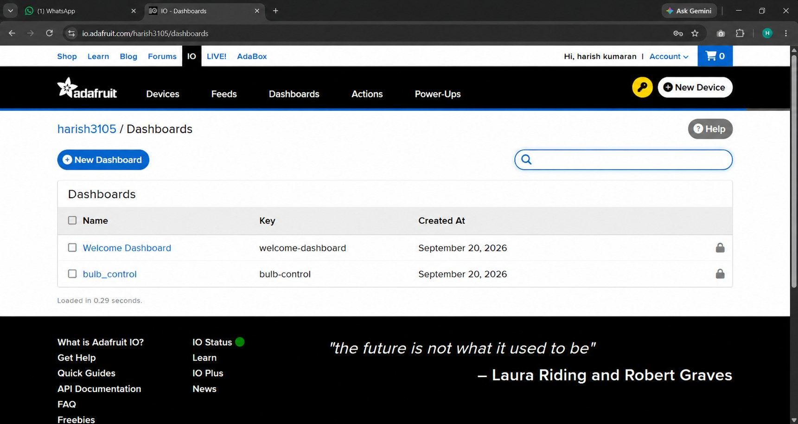
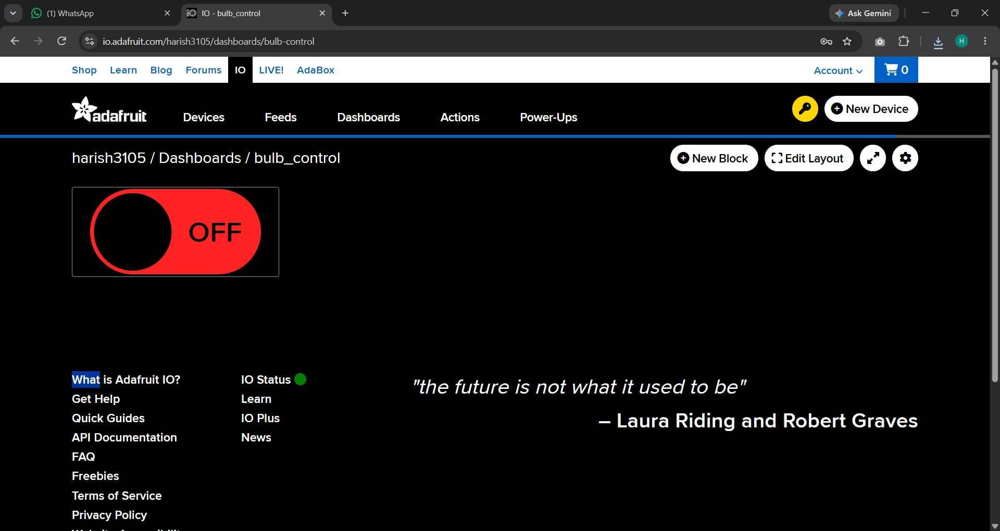
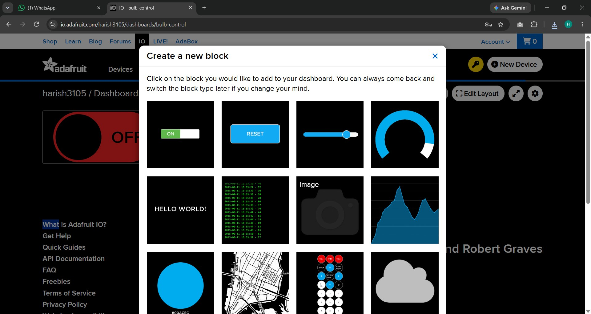
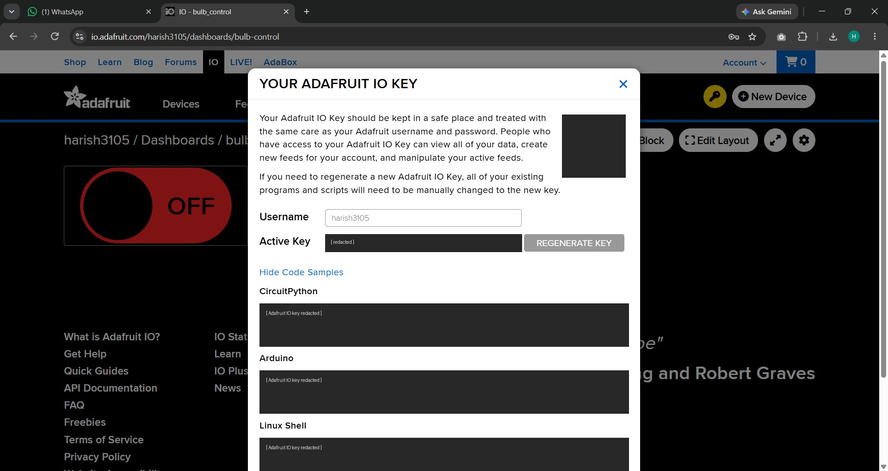
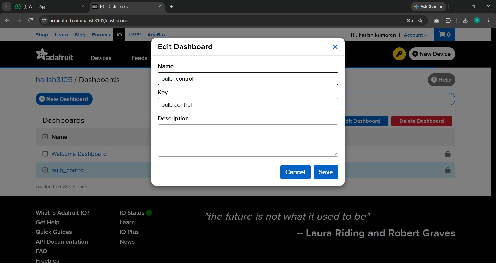
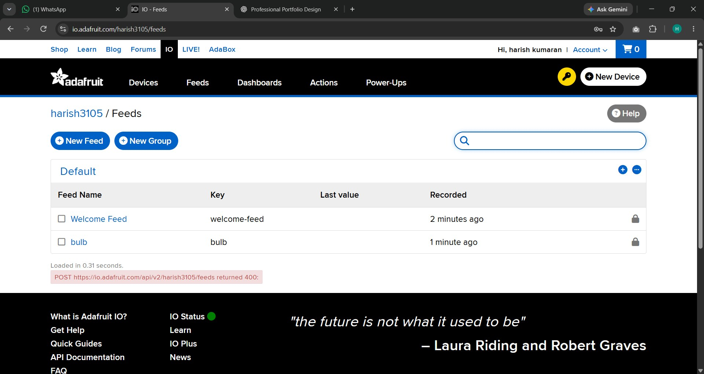
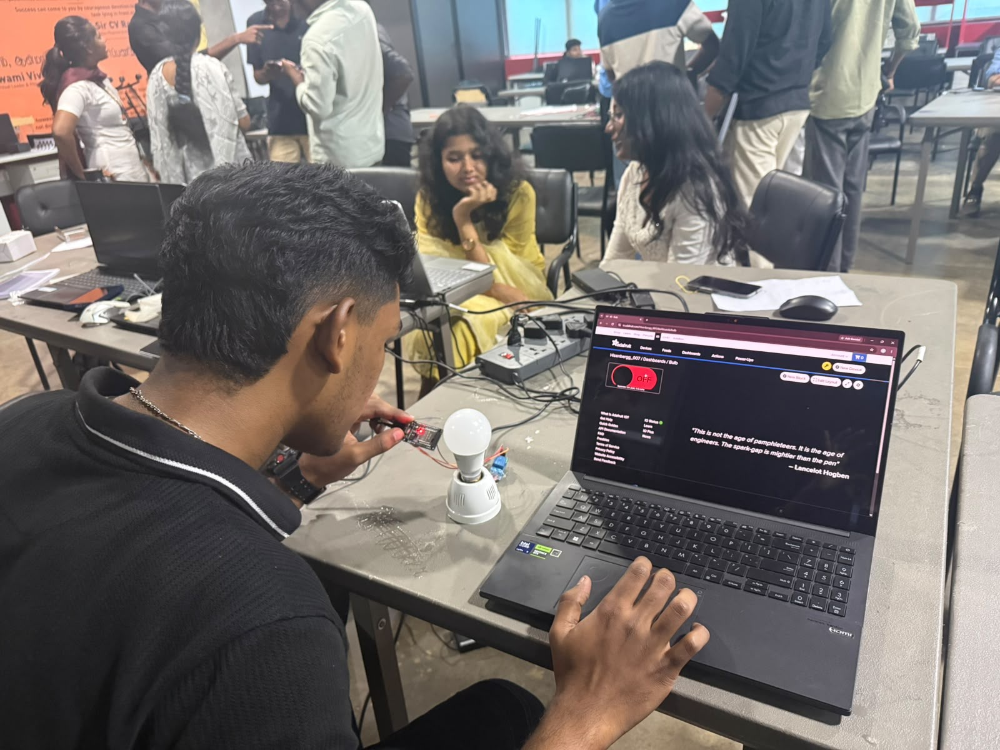
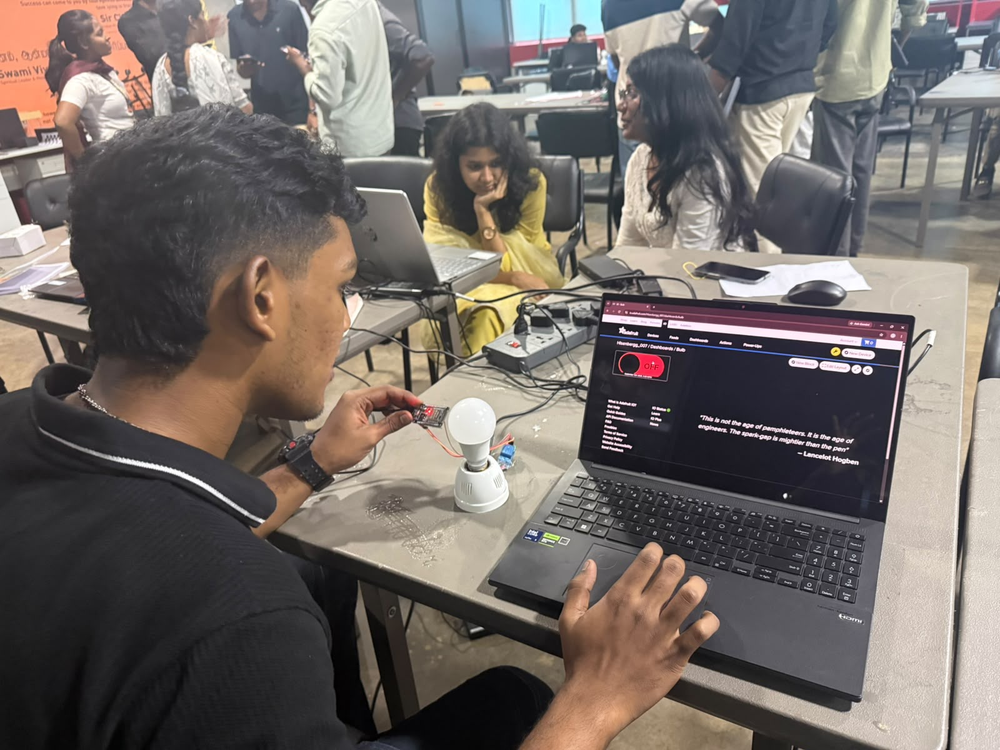
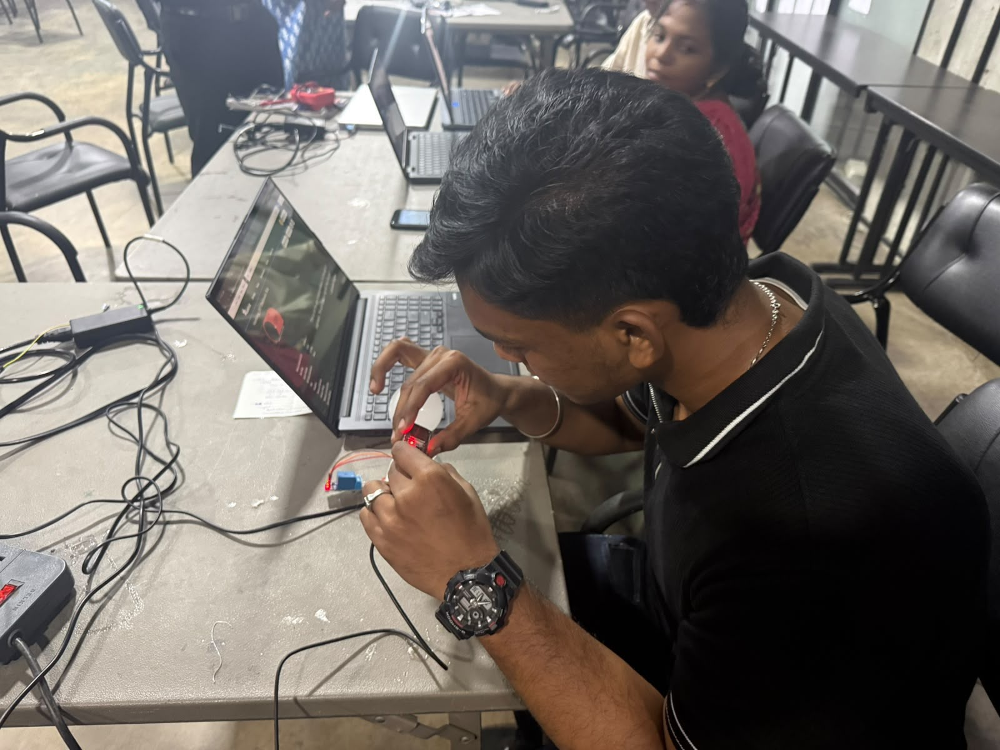

MQTT Cloud Dashboard with Relay Control
Control a bulb through an ESP32 relay using MQTT-based cloud messaging and an Adafruit IO dashboard.
1. Overview
This experiment marks the transition from local subnet HTTP communication to internet-scale IoT infrastructure. Instead of requiring the user device to be on the same local Wi-Fi network, control commands are routed through an online MQTT cloud broker hosted on Adafruit IO.
The ESP32 maintains a persistent, lightweight MQTT connection to the cloud broker and subscribes to a dedicated data feed. When a switch toggle is actuated on the remote Adafruit IO dashboard, the broker dispatches the payload to the ESP32 in real time. The microcontroller decodes the command and actuates digital pin GPIO 23, driving an electro-mechanical relay module that securely switches an AC-powered incandescent bulb.
2. Objective
The primary objective of this assignment is to control a mains-powered bulb from an Adafruit IO cloud dashboard by sending MQTT messages to an ESP32, which switches a 5V relay module. Commands travel through the internet and not through the local Wi-Fi subnet, so the dashboard can be used from any network.
- Understand MQTT publish / subscribe messaging: broker-centric, asynchronous delivery of payloads through a named feed.
- Control hardware through cloud messaging: switch a physical load from a browser dashboard without being on the same local network.
- Interface a relay with ESP32 logic signals: drive a 5V relay input from a 3.3V GPIO pin and switch a 230V AC bulb through its contacts.
- Evaluate response time: observe the delay between a dashboard click, the cloud broker and the relay actuation.
- Design an event-driven control flow: keep the connection alive in
loop()without blocking the microcontroller.
3. Problem Statement
A local web server, as used in Task 01, only works while the controlling device is on the same Wi-Fi network as the ESP32. It also requires the ESP32 to run its own server and to have an address that the client can reach.
This experiment addresses the following problem: How can a relay-controlled bulb be switched from a dashboard anywhere on the internet, without a public IP address or a web server on the ESP32?
The solution uses a cloud MQTT broker (Adafruit IO) as an intermediary. The ESP32 opens an outgoing connection to the cloud, subscribes to a feed, and acts on the messages that the dashboard publishes to that feed.
4. Introduction
MQTT (Message Queuing Telemetry Transport) is a lightweight publish / subscribe protocol designed for small devices and unreliable networks. Clients do not talk to each other directly. They connect to a broker, which receives messages published to a topic and forwards them to every client that has subscribed to it.
Adafruit IO is a cloud IoT platform that provides an MQTT broker, data feeds and browser dashboards with blocks such as toggle switches and gauges. A feed stores the values of one data stream, and a dashboard block can read from or write to a feed.
ESP32 and Relay: the ESP32 connects to Wi-Fi and, through the Adafruit IO Arduino library, to the broker. A relay module lets the low-power GPIO signal switch a separate high-voltage circuit through isolated contacts, so a 230V bulb can be controlled safely when the wiring is done correctly.
5. Working Principle
The system follows a publish / subscribe cycle. Each dashboard action travels to the ESP32 through the cloud broker and ends as a relay state change:
Step 1 — Dashboard Toggle
The user clicks the toggle block on the Adafruit IO dashboard bulb_control (Figure 14.2). The block writes its ON or OFF value to its feed.
Step 2 — Adafruit IO Broker
The new feed value is received by the Adafruit IO MQTT service, which forwards it to every client subscribed to that feed.
Step 3 — ESP32 Subscription
The ESP32 joins Wi-Fi with connectWiFi(), connects to io.adafruit.com on port 1883 with connectMQTT() and subscribes to the feed bulb-control. In loop(), readSubscription(5000) waits up to 5 seconds for a message.
Step 4 — Command Decoding
processBulbCommand() trims the payload and converts it to lower case. "1", "on", "bulb on" and "bulbon" mean ON; "0", "off", "bulb off", "bulboff" and "of" mean OFF. Any other text is ignored.
Step 5 — Relay and Bulb
The sketch writes the relay pin (GPIO 23) HIGH for ON and LOW for OFF and prints Bulb turned ON or Bulb turned OFF. The relay contacts then close or open the bulb circuit.
Reverse Path
The sketch only subscribes to the feed. It never publishes, so the ESP32 does not report the relay state back to the dashboard in the existing implementation.
6. Hardware Components
Components and specifications employed to construct the cloud-controlled relay switching circuit:
Controller
ESP32 DevKit V4
Relay Module
5V Relay (SRD-05VDC-SL-C)
Load
230V AC Bulb & Holder
Relay Coil
5V DC / ~70mA Coil Current
Contact Rating
250V AC / 10A Max
Control Pin
GPIO 23 → Relay IN
Relay Power
VCC (5V), GND (Common)
Load Terminals
COM (Common), NO (Norm. Open)
7. Circuit Diagram
Schematic diagram illustrating the separation between low-voltage digital control circuits and the AC mains loop:

High-Voltage Safety Wiring Diagram — verified with a 5V bench signal before any mains connection.
Electrical Safety Notice: The relay module incorporates optocoupler and mechanical galvanic isolation between the low-voltage ESP32 logic side (3.3V/5V) and the high-voltage 230V AC load loop. Always bench-test logic continuity before connecting mains electricity. Direct uninsulated mains experimentation is hazardous.
8. Connection Configuration
Connections as stated in the existing Task 02 hardware description. Items that are not stated are marked as such:
| Connection | ESP32 / Module | Connected To | Status |
|---|---|---|---|
| Control signal | ESP32 GPIO 23 (RELAY_PIN 23) |
Relay module IN | Sketch, repository README and hardware description agree |
| Relay power | ESP32 5V (VIN) | Relay VCC | Repository README; same as the hardware description (VCC 5V) |
| Relay ground | ESP32 GND | Relay GND (common) | Repository README |
| Load switching | Relay COM and NO | AC bulb circuit (bulb holder) | Stated as COM (Common) and NO (Normally Open); the live / neutral side is not specified in the available project evidence |
| ESP32 power | USB / supply | — | Not specified in the available project evidence |
9. Software Requirements
Tools, services and libraries used to develop and run the MQTT relay control:
Arduino IDE
Development environment for the ESP32_AdafruitIO_MQTT_Cloud_Control.ino sketch, compiled and flashed to the ESP32.
ESP32 Board Support
Arduino core for the ESP32, required to compile the sketch for the board.
Adafruit_MQTT Library
Provides Adafruit_MQTT.h and Adafruit_MQTT_Client.h: the MQTT client and the feed subscription used by the sketch.
WiFi.h
ESP32 Wi-Fi station connection.
Serial Monitor (115200 bps)
Matches Serial.begin(115200) in the sketch. Shows Wi-Fi Connected!, MQTT Connected!, Received command: and the ON / OFF messages.
Adafruit IO Account
Cloud account with the feed and the bulb_control dashboard (Section 14).
Web Browser
Used to operate the dashboard toggle from any network.
10. System Architecture
MQTT (Message Queuing Telemetry Transport) operates on an asynchronous Publish/Subscribe paradigm. In this deployment, the publisher, cloud broker, and subscriber interact as follows:
User UI
Cloud Broker
Edge Device
Logic Pin
Isolator
AC Load
Publisher → MQTT Broker → Subscriber: Adafruit IO serves as the cloud MQTT broker hosting the dedicated feed named bulb-control. The dashboard acts as a publisher pushing ON / OFF values (1 / 0) to the feed. The ESP32 acts as a persistent subscriber listening for feed events and translating them into physical pin state transitions.
11. Implementation
Step-by-step workflow followed to implement the MQTT relay control:
- 1. Create the dashboard and feed: an Adafruit IO dashboard
bulb_control(keybulb-control) with a toggle block was created (Figures 14.1–14.3, 14.5), and the feed list contains a feed namedbulb(Figure 14.6). - 2. Collect the credentials: the Adafruit IO username and key were taken from the IO Key dialog (Figure 14.4). The key is redacted in this report.
- 3. Wire the relay: relay IN to ESP32 GPIO 23, relay VCC to 5V (VIN), relay GND to GND, and the bulb loop through COM and NO (Section 8).
- 4. Program the ESP32: the sketch connects to Wi-Fi and the MQTT broker, subscribes to the feed
bulb-controland starts with the relay OFF (Section 12). - 5. Test from the dashboard: use the toggle and watch the Serial Monitor and the bulb (Sections 16–17).
ESP32 DevKit V4 (as listed in the hardware description)
115200 bps
bulb-control (as in the sketch)
12. Source Code
The sketch below is ESP32_AdafruitIO_MQTT_Cloud_Control.ino from the Task 02 repository, shown exactly as it exists. The Wi-Fi name and password, Adafruit IO username and key are placeholders in the file, so no secrets are displayed.
1#include <WiFi.h>
2#include "Adafruit_MQTT.h"
3#include "Adafruit_MQTT_Client.h"
4
5#define WIFI_SSID "YOUR_WIFI_NAME"
6#define WIFI_PASS "YOUR_WIFI_PASSWORD"
7#define AIO_USERNAME "YOUR_ADAFRUIT_USERNAME"
8#define AIO_KEY "YOUR_ADAFRUIT_IO_KEY"
9
10#define AIO_SERVER "io.adafruit.com"
11#define AIO_SERVERPORT 1883
12
13WiFiClient client;
14Adafruit_MQTT_Client mqtt(&client, AIO_SERVER, AIO_SERVERPORT, AIO_USERNAME, AIO_KEY);
15
16Adafruit_MQTT_Subscribe bulbControl = Adafruit_MQTT_Subscribe(&mqtt, AIO_USERNAME "/feeds/bulb-control");
17
18#define RELAY_PIN 23
19#define RELAY_ON HIGH
20#define RELAY_OFF LOW
21
22void connectWiFi() {
23 Serial.print("Connecting to Wi-Fi");
24 WiFi.begin(WIFI_SSID, WIFI_PASS);
25 while (WiFi.status() != WL_CONNECTED) {
26 delay(500);
27 Serial.print(".");
28 }
29 Serial.println();
30 Serial.println("Wi-Fi Connected!");
31}
32
33void connectMQTT() {
34 int8_t ret;
35 if (mqtt.connected()) {
36 return;
37 }
38 Serial.print("Connecting to MQTT... ");
39 uint8_t retries = 3;
40 while ((ret = mqtt.connect()) != 0) {
41 Serial.println(mqtt.connectErrorString(ret));
42 Serial.println("Retrying MQTT connection in 5 seconds...");
43 mqtt.disconnect();
44 delay(5000);
45 retries--;
46 if (retries == 0) {
47 while (1); // wait for watchdog to reset
48 }
49 }
50 Serial.println("MQTT Connected!");
51}
52
53void processBulbCommand(String command) {
54 command.trim();
55 command.toLowerCase();
56
57 if (command == "1" || command == "on" || command == "bulb on" || command == "bulbon") {
58 digitalWrite(RELAY_PIN, RELAY_ON);
59 Serial.println("Bulb turned ON");
60 }
61 else if (command == "0" || command == "off" || command == "bulb off" || command == "bulboff" || command == "of") {
62 digitalWrite(RELAY_PIN, RELAY_OFF);
63 Serial.println("Bulb turned OFF");
64 }
65}
66
67void setup() {
68 Serial.begin(115200);
69 delay(10);
70
71 pinMode(RELAY_PIN, OUTPUT);
72 digitalWrite(RELAY_PIN, RELAY_OFF);
73
74 connectWiFi();
75
76 mqtt.subscribe(&bulbControl);
77}
78
79void loop() {
80 if (WiFi.status() != WL_CONNECTED) {
81 connectWiFi();
82 }
83
84 connectMQTT();
85
86 Adafruit_MQTT_Subscribe *subscription;
87 while ((subscription = mqtt.readSubscription(5000))) {
88 if (subscription == &bulbControl) {
89 String command = (char *)bulbControl.lastread;
90 Serial.print("Received command: ");
91 Serial.println(command);
92 processBulbCommand(command);
93 }
94 }
95}13. Code Breakdown
Libraries and Settings
WiFi.h with Adafruit_MQTT.h and Adafruit_MQTT_Client.h. The broker is io.adafruit.com on port 1883, with the username and key as placeholders.
Feed Subscription
bulbControl subscribes to AIO_USERNAME "/feeds/bulb-control". mqtt.subscribe(&bulbControl) is called once in setup().
GPIO 23 Relay Control
RELAY_PIN 23, RELAY_ON HIGH, RELAY_OFF LOW. The pin is an OUTPUT and starts OFF in setup().
connectWiFi() and connectMQTT()
Join Wi-Fi with a 500 ms retry loop, then connect to the broker. After three failed MQTT attempts (5 s apart) the code waits in while (1) for the watchdog to reset the board.
processBulbCommand()
Trims and lower-cases the text. "1", "on", "bulb on", "bulbon" switch the relay ON; "0", "off", "bulb off", "bulboff", "of" switch it OFF.
loop()
Reconnects Wi-Fi and MQTT if needed, then readSubscription(5000) waits up to 5 seconds for a message, prints Received command: and calls processBulbCommand().
14. Adafruit IO Dashboard and Feed Setup
Screenshots of the Adafruit IO account used for the cloud side of this task (account harish3105):

Figure 14.1 — Dashboards page: Welcome Dashboard and bulb_control (key bulb-control), both created September 20, 2026

Figure 14.2 — The bulb_control dashboard with one toggle block, currently showing OFF

Figure 14.3 — Create a new block dialog listing the available dashboard blocks (toggle, button, slider, gauge, text, stream, image, chart, color, map, remote control and others)

Figure 14.4 — Your Adafruit IO Key dialog with username harish3105. The key, the QR code and the code samples are redacted. Keep this key private

Figure 14.5 — Edit Dashboard dialog: name bulb_control, key bulb-control, empty description

Figure 14.6 — Feeds page: Welcome Feed (welcome-feed) and bulb (bulb) in the Default group. A red message below the table reads "POST https://io.adafruit.com/api/v2/harish3105/feeds returned 400"
15. Execution Procedure
Steps required to upload the firmware and operate the relay from the dashboard (derived from the sketch and the dashboard setup):
- 1. Install Arduino IDE, ESP32 board support and the Adafruit MQTT library: the sketch includes
Adafruit_MQTT.handAdafruit_MQTT_Client.h, so the library must be available. - 2. Open the sketch: open
ESP32_AdafruitIO_MQTT_Cloud_Control.inoin Arduino IDE and select the ESP32 board and COM port. - 3. Enter credentials: replace the four placeholders (
WIFI_SSID,WIFI_PASS,AIO_USERNAME,AIO_KEY) with your own values locally. Do not publish them. - 4. Upload: compile and flash the sketch to the ESP32.
- 5. Open the Serial Monitor: set 115200 bps. Dots are printed until Wi-Fi connects, then
Wi-Fi Connected!andMQTT Connected!appear. - 6. Operate the toggle: open the
bulb_controldashboard and switch the toggle ON and OFF. - 7. Observe: the Serial Monitor prints
Received command:followed byBulb turned ONorBulb turned OFF, and the relay switches the bulb.
Only perform the mains wiring with the safety measures listed in Section 22.
16. Working and Output
Output produced by the code and what the available evidence shows:
Serial Monitor Output (from the code)
The sketch prints the following lines. No Serial Monitor screenshot was available, so this lists the code's own messages and is not a captured log:
Wi-Fi Connected!
Connecting to MQTT... MQTT Connected!
Received command: <payload>
Bulb turned ON / Bulb turned OFF
Dashboard Output
The dashboard toggle is shown in the OFF state in Figure 14.2 and in the lab photographs (Section 24). A screenshot of the ON state was not provided. To add
Physical Output
The demonstration video (Section 25) shows the bulb on the table lighting up brightly and later going off again during the 12-second clip.
17. Testing and Verification
End-to-end operational verification across cloud dashboard triggers, serial telemetry logs, and mechanical relay switching:
Dashboard ON → MQTT → ESP32 → Relay → Bulb ON
Toggle clicked on Adafruit IO. The sketch treats 1 / on as ON, prints Bulb turned ON and drives GPIO 23 HIGH, closing the relay. The demonstration video shows the bulb lighting up.
Dashboard OFF → MQTT → ESP32 → Relay → Bulb OFF
Toggle turned off. The sketch treats 0 / off as OFF, prints Bulb turned OFF and drives GPIO 23 LOW, opening the relay. The video shows the bulb going off again.
Latency Observation: The system was evaluated targeting sub-second control response between remote browser clicks and physical relay actuation. Observed latency was consistently responsive across standard broadband Wi-Fi, reflecting MQTT's lightweight header overhead, though real-world response naturally varies with network conditions.
18. Problems and Solutions
Problems recorded in the project README, followed by items visible in the evidence (no causes or fixes are invented):
Observed: Feed Creation Returned 400
The Feeds page in Figure 14.6 shows the message "POST …/feeds returned 400". The cause and the fix were not recorded. To add
Problem: MQTT Disconnections
The repository README states that the ESP32 occasionally dropped the MQTT connection because of network latency.
Solution: reconnect logic: loop() calls connectMQTT(), which retries the connection up to three times (implemented in the sketch).
Problem: Relay Logic Level
The README states that some relay modules are active-low, so the HIGH / LOW logic had to match the relay hardware.
Solution: the logic is defined once in RELAY_ON and RELAY_OFF (HIGH = ON in the sketch).
Open Item: Feed Name
The sketch subscribes to bulb-control, while the Feeds page in Figure 14.6 lists a feed with key bulb and the dashboard key is bulb-control. Confirm which feed the toggle block writes to.
Open Item: Account Name in Lab Photos
The dashboard visible on the laptop in the lab photographs shows a different account name (Hisenbergg_007 / Dashboards / Bulb) from the screenshots in Section 14 (harish3105). Confirm which account the code's IO_USERNAME refers to.
Security: Key Visible in a Screenshot
The IO Key dialog screenshot originally showed the full key. It is redacted in Figure 14.4. A key that has been displayed or shared should be regenerated in Adafruit IO, and the new key entered in the sketch locally.
19. Applications
The same MQTT feed-and-relay pattern is used for remote switching of loads:
Remote Lighting
Switch a lamp or room light from a phone or browser, including from outside the home network.
Appliance Switching
Control low-power appliances through a suitably rated relay or contactor.
Scheduled or Remote Utilities
Operate irrigation pumps or similar loads remotely, with proper isolation and enclosure.
IoT Teaching Demonstrator
Shows the full path from a cloud dashboard to a physical actuator in a classroom.
20. Conclusion
This experiment documents an ESP32 that connects to Wi-Fi and Adafruit IO, subscribes to a feed, and switches a 5V relay module according to ON and OFF messages. The Adafruit IO dashboard bulb_control provides the toggle, and the demonstration video shows the bulb lighting up and turning off.
The report also records what is still unconfirmed: the feed name (bulb-control in the sketch, bulb in the feed list), the Adafruit IO account shown in the lab photographs, and the missing Serial Monitor and ON-state screenshots. These are marked in the sections above.
✅ A cloud dashboard toggle was set up in Adafruit IO, the ESP32 sketch handles ON and OFF commands for a relay, and the demonstration video shows the bulb switching. The feed name and account shown in the photographs should be confirmed against the working setup.
21. References
Documentation and resources consulted during implementation:
- Adafruit Industries. Welcome to Adafruit IO. Adafruit Learning System. learn.adafruit.com
- Adafruit Industries. Adafruit IO Arduino Library. GitHub — adafruit/Adafruit_IO_Arduino. github.com
- Adafruit Industries. Adafruit IO MQTT API. Adafruit IO Documentation. io.adafruit.com
- MQTT.org. MQTT: The Standard for IoT Messaging. OASIS MQTT Technical Committee. mqtt.org
- Espressif Systems. ESP32-WROOM-32 Datasheet. Espressif Systems, 2023. espressif.com
- Arduino. Arduino Reference — pinMode(), digitalWrite(). Arduino LLC. arduino.cc
22. Safety Notes
Galvanic Electrical Isolation
The relay module provides physical and optical isolation between the low-voltage ESP32 control circuitry (3.3V/5V DC) and the dangerous 230V AC mains circuit.
5V Bench Signal Verification
Before connecting high-voltage mains power, the switching logic was pre-tested using low-voltage DC signals and a continuity meter to verify coil actuation and contact integrity.
Enclosure & Terminal Insulation
All AC wiring connections must use insulated screw terminals and protected enclosures. Never leave live conductors exposed during operation or testing.
No Direct Mains Experimentation
Direct mains voltage can cause lethal electric shocks and fires. High-voltage setups must only be tested under controlled laboratory supervision with verified isolation.
23. Key Learnings
MQTT vs. HTTP in IoT
Recognized why MQTT is preferred for IoT: persistent lightweight TCP connections eliminate HTTP header polling overhead, enabling instant push notifications from the cloud.
Subscription-Driven Control
Learned how the loop waits for subscription messages (readSubscription) and acts on each payload as it arrives, decoupling the sender from the device.
Relay Transistor Driver Dynamics
Understood how relay driver boards use flyback diodes and optoisolators to prevent inductive voltage spikes from damaging microcontroller GPIO pins.
Cloud Dashboard Feeds
Gained experience configuring cloud telemetry feeds, dashboard toggle blocks, and secure device authentication on Adafruit IO.
24. Event Gallery

Figure 24.1 — Lab setup: the ESP32 is held beside the bulb and relay module while the Adafruit IO dashboard on the laptop shows the toggle in the OFF state

Figure 24.2 — Second view of the same setup: ESP32, relay module, bulb holder and the dashboard on the laptop

Figure 24.3 — Close view of the relay module and ESP32 during testing (the red LED on the board is lit)
25. Video Demonstration
VIDEO DEMO — MQTT Cloud Dashboard with Relay Control
Real-time bulb control using MQTT, Adafruit IO, ESP32 and relay.